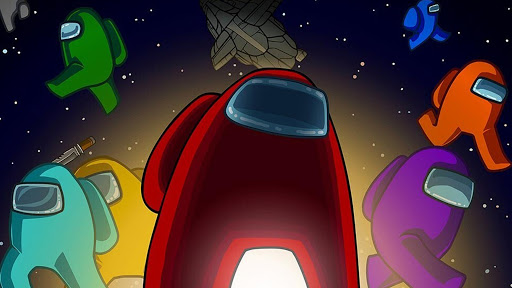

Among US

Among Us (з англ. — «Серед нас») — багатокористувацька відеогра на соціальну дедукцію, розроблена американською компанією InnerSloth. Вона була випущена 15 червня 2018. Гра виконана в космічному антуражі. У ній гравці розділяються на дві ролі: цивільні члени екіпажу і самозванці. Метою цивільних є вирахувати самозванців і нейтралізувати їх, а самозванців — убити певну кількість цивільних. У 2018 році гра не отримала широкого розголосу, але у вересні 2020 завдяки Twitch, YouTube і іншим платформам вона домоглася популярності. Внаслідок несподіваного підвищеного інтересу до неї був анонсований сиквел — Among Us 2. Згодом вихід сиквела був скасований 23 вересня 2020 року, розробники прийняли рішення розвивати оригінальну гру. Виникло багато пабліків і груп у соцмережах, присвячених Among us.